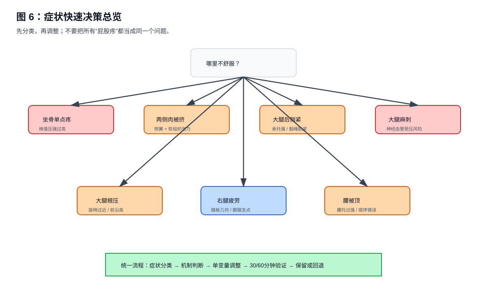

第七章 症状决策树¶
本章核心观点：座椅调节不能只根据“哪里疼”直接下结论。相同位置的不适，可能来自不同机制；相同机制，也可能表现为不同位置的不适。决策树的作用，是把模糊体感转化为可验证的工程判断。
7.1 使用决策树之前的原则¶
在进入具体症状前，先遵守三个原则。
原则一：先分类，再调整¶
不要一出现不适就立即调座椅。先判断它属于哪一类：
压力集中
肌肉紧张
神经压迫
踏板控制负荷
靠背 / 腰托支撑问题
久坐耐受性问题
分类错误，调整方向就会错。
原则二：一次只调整一个变量¶
每次只改一个变量：
- 高度；
- 前后；
- 前沿；
- 靠背；
- 腰托；
- 方向盘；
- 脚跟位置。
不要一次同时改高度、前后、前沿和靠背。否则无法判断哪个变量有效，哪个变量带来副作用。
原则三：用时间验证，不用上车瞬间判断¶
建议至少记录：
- 5 分钟：初始感觉；
- 30 分钟：软组织压力开始显现；
- 60 分钟：真实耐受性；
- 下车后：是否有残留；
- 第二天：是否有延迟反应。
7.2 决策树总览¶
可以先从这个总表判断方向。
| 主要症状 | 优先怀疑 | 优先检查 | 第一调整方向 |
|---|---|---|---|
| 坐骨一个点疼 | 峰值压强高 | 骨盆、前沿、高度 | 增加接触面积 |
| 坐骨后方 / 尾骨方向疼 | 骨盆后倾 | 靠背、高度、腰托 | 骨盆回中立 |
| 坐骨两侧肉被挤 | 侧翼 + 软组织张力 | 高度、坐深、臀肌 | 小幅升高或后移 |
| 大腿后侧紧硬 | 大腿承托强 / 腘绳肌紧 | 高度、前沿、前后 | 后移或降低前沿 |
| 大腿后侧麻刺 | 神经血管受压 | 前沿、高度、硬边 | 立即减压 |
| 大腿根压力 | 座椅太近 / 前沿高 | 前后、前沿 | 后移 1 cm |
| 右腿踩油门累 | 踏板几何不佳 | 脚跟、前后、高度 | 调脚跟和前后 |
| 腰被顶 | 腰托过强 / 顺序错误 | 腰托、骨盆 | 降低腰托 |
| 办公椅也类似 | 身体组织状态 | 腘绳肌、臀肌、久坐 | 减少久坐 + 拉伸 |

7.3 决策树一：坐骨单点压痛¶
典型描述¶
- 坐骨附近一个点疼；
- 像硬币大小；
- 越坐越明显；
- 起身后缓解；
- 大腿参与承重少；
- 调整后痛点会移动。
可能机制¶
坐骨单点疼
↓
局部接触面积太小
↓
峰值压强升高
↓
软组织缺血 / 神经敏感
↓
疼痛累积
判断流程¶
flowchart TD
A[坐骨单点压痛] --> B{是否是硬币大小的小点?}
B -->|是| C[峰值压强过高]
B -->|不是，是一片酸胀| D[可能是正常承重或软组织压力]
C --> E{是否伴随尾骨方向疼?}
E -->|是| F[优先检查骨盆后倾/靠背太躺/座椅太低]
E -->|否| G[检查大腿是否参与承重]
G --> H{大腿后侧是否几乎没压力?}
H -->|是| I[考虑小幅提高高度或抬前沿]
H -->|否| J[检查坐垫硬点/左右骨盆不对称]优先调整¶
- 先确认骨盆不是明显后倾；
- 适当增加大腿后侧承托；
- 小幅调整高度或前沿；
- 避免一次调整过大；
- 记录 30 / 60 分钟变化。
保留信号¶
- 坐骨单点疼下降；
- 大腿压力变成大面积承托；
- 不出现麻刺；
- 下车后无残留。
回退信号¶
- 坐骨单点疼转移成大腿后侧麻刺；
- 大腿根明显横向压迫；
- 踩踏板变累；
- 坐骨后方 / 尾骨方向疼加重。
7.4 决策树二：坐骨两侧软组织挤压¶
典型描述¶
- 不是骨头尖疼；
- 是坐骨两侧肉被挤；
- 臀部侧边有夹住感；
- 坐深后更明显；
- Model 3 更明显，办公椅也可能出现。
可能机制¶
坐骨两侧软组织挤压
↓
座椅侧翼限制
+
臀部软组织张力
+
骨盆姿态
+
右腿动态负荷
判断流程¶
flowchart TD
A[坐骨两侧肉被挤] --> B{是否单侧更明显?}
B -->|右侧明显| C[考虑右腿踏板控制负荷]
B -->|双侧明显| D[考虑坐垫侧翼/臀肌张力/坐深]
C --> E{离开油门是否明显缓解?}
E -->|是| F[动态负荷占比高: 检查脚跟和前后位置]
E -->|否| G[检查座椅侧翼和骨盆位置]
D --> H{办公椅是否也类似?}
H -->|是| I[身体组织状态占比高: 腘绳肌/臀肌/久坐]
H -->|否| J[车型座椅侧翼占比高]优先调整¶
当前案例中可按以下顺序：
第一步：小幅升高 1 cm
目的：改善骨盆和坐骨两侧软组织压力
第二步：若大腿后侧仍紧，后移 1 cm
目的：减轻大腿根和右腿动态负荷
保留信号¶
- 两侧挤压下降；
- 坐骨单点疼不复发；
- 大腿后侧没有麻刺；
- 腰和肩仍能贴合靠背；
- 踩油门更自然或不变差。
回退信号¶
- 大腿后侧麻刺；
- 大腿根被横向勒住；
- 坐骨单点疼复发；
- 右腿踩踏板更累；
- 腰背离开靠背。
7.5 决策树三：大腿后侧紧硬¶
典型描述¶
- 大腿后侧一大片紧；
- 肌肉像硬的；
- 坐久更明显；
- 可能开车和办公椅都有；
- 不一定是单点疼。
先区分两类¶
A 类：大面积承托感
- 有压力
- 不麻
- 不刺
- 下车后很快缓解
- 坐骨单点疼减少
B 类：异常紧硬
- 越坐越硬
- 伴随麻刺
- 下车后仍残留
- 办公椅也明显
判断流程¶
flowchart TD
A[大腿后侧紧硬] --> B{是否伴随麻刺/过电感?}
B -->|是| C[优先判断神经血管受压, 立即减压]
B -->|否| D{是否下车后快速缓解?}
D -->|是| E[可能是承托增加或动态负荷]
D -->|否| F[身体组织状态占比提高]
E --> G{坐骨单点疼是否下降?}
G -->|是| H[压力分散方向可能正确, 继续观察]
G -->|否| I[可能只是压力转移, 需回看高度/前沿]
F --> J[检查腘绳肌/臀肌/办公椅久坐]优先调整¶
如果没有麻刺：
- 先检查是否前沿过高；
- 若座椅较近，尝试后移 1 cm；
- 若高度刚升高，观察是否加重大腿压力；
- 同步做腘绳肌和臀肌放松；
- 不要立刻大幅降低，避免坐骨单点疼复发。
如果有麻刺：
- 立即降低前沿或整体高度；
- 检查是否有硬边压迫；
- 避免继续硬扛；
- 若离车后仍持续，应咨询专业人士。
7.6 决策树四：大腿后侧麻刺 / 过电感¶
典型描述¶
- 麻；
- 刺；
- 过电；
- 不是普通酸胀；
- 沿大腿后方走；
- 有时伴随小腿方向牵扯。
判断流程¶
flowchart TD
A[大腿后侧麻刺/过电感] --> B{是否只在坐着时出现?}
B -->|是| C[座椅压迫可能性高]
B -->|否, 离车后也有| D[需要考虑腰椎/神经问题, 建议就医评估]
C --> E{是否靠近膝窝/大腿后侧下方?}
E -->|是| F[前沿/高度/硬边压迫风险]
E -->|否| G[检查臀部深层/坐骨神经区域]
F --> H[降低前沿或高度, 增加膝窝间隙]优先原则¶
麻刺不是普通压力感。它比“有压力”“有酸胀”更需要谨慎。
回退信号¶
只要出现以下情况，优先回退最近一次调整：
- 麻刺加重；
- 坐一会儿后向小腿放射；
- 下车后持续；
- 伴随无力；
- 夜间也有异常感。
7.7 决策树五：大腿根压力¶
典型描述¶
- 臀部下面一条横向压力；
- 大腿根像被顶住；
- 前沿抬高后更明显；
- 座椅靠前时更明显；
- 后移后可能缓解。
判断流程¶
flowchart TD
A[大腿根压力] --> B{是否横向一条被勒?}
B -->|是| C[检查前沿高度和座椅是否过近]
B -->|否, 是大面积承托| D[可能是正常分散承重]
C --> E{踩油门时是否加重?}
E -->|是| F[右腿动态负荷 + 座椅几何]
E -->|否| G[静态坐垫承托偏强]
F --> H[优先后移 1 cm, 检查脚跟支点]优先调整¶
- 若座椅偏近，先后移 1 cm；
- 若前沿明显高，再略降前沿；
- 若刚升高座椅后出现，观察高度是否过高；
- 确认刹车到底安全。
保留信号¶
- 大腿根压力下降；
- 踩踏板自然；
- 坐骨单点疼不复发；
- 大腿后侧不麻。
7.8 决策树六：右腿踩油门疲劳¶
典型描述¶
- 右腿比左腿累；
- 大腿后侧或臀下右侧紧；
- 脚踝控制不自然；
- 离开油门压力下降；
- 长时间电门控制后加重。
判断流程¶
flowchart TD
A[右腿踩油门疲劳] --> B{离开油门是否明显缓解?}
B -->|是| C[动态控制负荷占比高]
B -->|否| D[静态座椅压力占比高]
C --> E{脚跟是否稳定落地?}
E -->|否| F[调整脚跟位置/座椅前后]
E -->|是| G{是否座椅过近导致膝髋角小?}
G -->|是| H[后移 1 cm]
G -->|否| I[检查高度和前沿是否使大腿持续绷紧]优先调整¶
- 先找稳定脚跟支点；
- 检查是否座椅过近；
- 后移 1 cm 是优先小步实验；
- 不要为了解决右腿累而把座椅调到刹车不安全；
- 检查方向盘是否导致身体前探。
7.9 决策树七：腰被顶 / 腰托不适¶
典型描述¶
- 腰托一充气，大腿就被往前推；
- 腰不是被支撑，而是被顶；
- 身体前滑；
- 大腿根压力增加；
- 坐骨两侧更挤。
判断流程¶
flowchart TD
A[腰被顶] --> B{腰托是否充得明显?}
B -->|是| C[先降低腰托]
B -->|否| D[检查靠背角度和骨盆位置]
C --> E{降低后大腿根是否减轻?}
E -->|是| F[腰托过强或顺序错误]
E -->|否| G[继续检查座椅前后和高度]正确顺序¶
先坐深
↓
找骨盆中立
↓
腰部自然出现小弧
↓
腰托轻轻接住
错误顺序：
骨盆仍然后倾
↓
腰托打满
↓
腰托顶不进腰窝
↓
整个人被推向前
7.10 决策树八：办公椅也有类似感觉¶
典型描述¶
- 开车有大腿后侧紧；
- 办公椅也有；
- 坐骨两侧软组织也类似；
- 站起来明显缓解；
- 不是某一张椅子独有。
判断流程¶
flowchart TD
A[办公椅也类似] --> B{是否站起来明显缓解?}
B -->|是| C[久坐压力 + 软组织耐受性问题]
B -->|否| D[若持续疼/麻, 需专业评估]
C --> E{大腿后侧是否很紧?}
E -->|是| F[腘绳肌/臀肌张力需处理]
E -->|否| G[检查办公椅高度和坐垫前沿]
F --> H[减少久坐 + 拉伸 + 车内小步调整]处理策略¶
如果办公椅也类似，不要把所有问题都归因于 Model 3。
需要同步做：
- 每 30 到 45 分钟起身；
- 腘绳肌拉伸；
- 臀肌 / 梨状肌放松；
- 髋屈肌活动；
- 骨盆前后摇摆练习；
- 办公椅高度与坐深调整；
- 驾驶座椅小步验证。
7.11 调整后如何判断保留还是回退¶
每次调整后不要只问“舒服了吗”。应按下面标准判断。
可以保留的信号¶
满足越多，越说明方向正确：
- 坐骨单点疼下降；
- 坐骨两侧软组织挤压下降；
- 大腿后侧只是有承托，不麻不刺；
- 大腿根压力下降；
- 右腿踩油门更自然；
- 腰背和肩膀仍能贴合靠背；
- 刹车到底时膝盖仍有弯曲；
- 下车后不适快速消失；
- 第二天没有残留恶化。
需要继续观察的信号¶
- 有新压力，但不疼不麻；
- 大腿压力变明显，但坐骨单点疼下降；
- 坐骨存在感增强，但不是尖锐疼；
- 30 分钟内可以接受，60 分钟后才明显。
这类情况不建议马上回退，可记录 2 到 3 次。
需要回退的信号¶
出现以下任一情况，应优先回退最近一次调整：
- 麻、刺、过电感；
- 疼痛向小腿放射；
- 刹车到底时腿接近伸直；
- 身体需要前探；
- 腰背离开靠背；
- 下车后仍持续不适；
- 坐骨单点疼明显复发；
- 右腿踩踏板明显更累。
7.12 当前案例的决策路径¶
根据当前状态：
- 坐骨单点疼下降；
- 大腿后侧压力明显；
- 坐骨两侧软组织仍挤；
- 腰和肩能贴合靠背；
- 办公椅也类似；
- 右侧与油门控制有关。
推荐路径是：
flowchart TD
A[当前状态] --> B[前沿抬高后坐骨单点痛下降]
B --> C[说明压力分散方向有效]
C --> D[仍有坐骨两侧软组织挤压]
D --> E[实验A: 座椅整体升高 1 cm]
E --> F{两侧挤压是否下降?}
F -->|是| G[保留高度, 继续观察大腿后侧]
F -->|否| H[回退或检查侧翼/身体张力]
G --> I{大腿后侧是否仍紧硬?}
I -->|是| J[实验B: 后移 1 cm]
I -->|否| K[保持设置, 开始稳定记录]
J --> L{右腿控制是否更自然?}
L -->|是| M[保留并记录]
L -->|否| N[回退后移量]当前最重要的验证点¶
- 升高 1 cm 后，坐骨两侧软组织是否下降；
- 升高后，大腿后侧是否变成麻刺；
- 后移 1 cm 后，大腿根和右腿控制是否改善；
- 刹车到底是否仍安全；
- 办公椅同类症状是否随拉伸和减少久坐改善。
7.13 本章小结¶
症状决策树的目的不是给出一次性答案，而是建立可迭代的判断系统。
- 坐骨单点疼：优先考虑峰值压强；
- 坐骨两侧肉挤：考虑侧翼、软组织张力、骨盆和右腿动态负荷；
- 大腿后侧紧硬：先区分承托感和异常紧张；
- 大腿后侧麻刺：优先减压，不要硬扛；
- 大腿根压力：优先检查座椅过近和前沿高度；
- 右腿疲劳：必须把踏板几何纳入分析；
- 腰被顶：先调整腰托顺序和强度；
- 办公椅也类似：说明身体组织状态也参与了问题。
真正有效的座椅调节，不是找到一个永远不变的位置，而是形成一套稳定的判断方法：
症状分类
↓
机制判断
↓
小步调整
↓
时间验证
↓
保留或回退